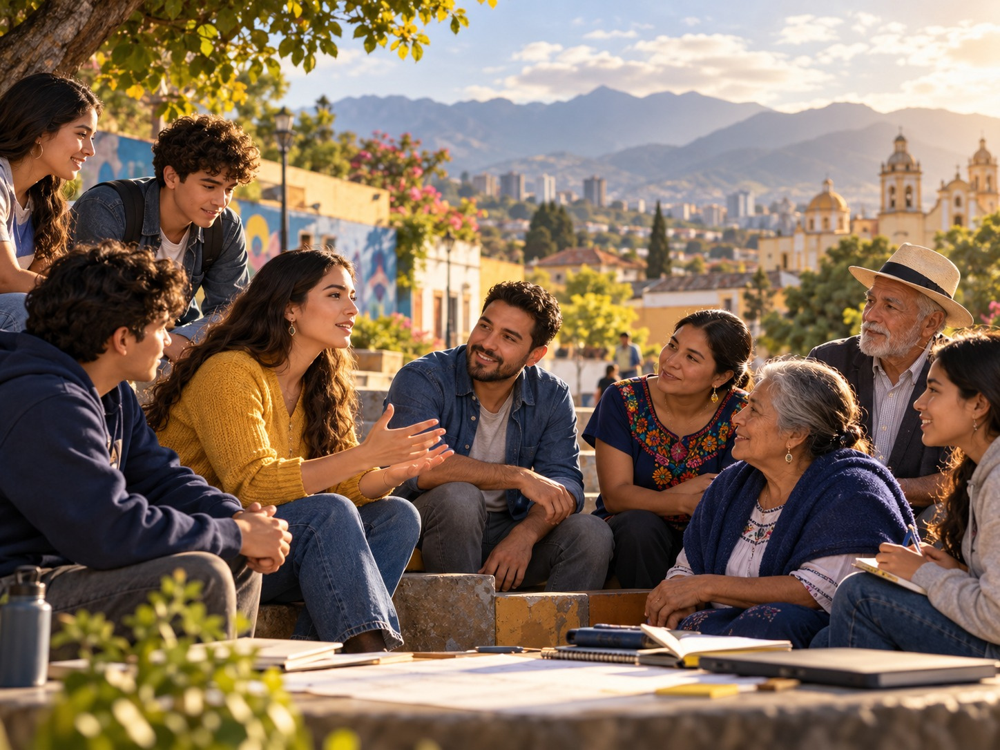
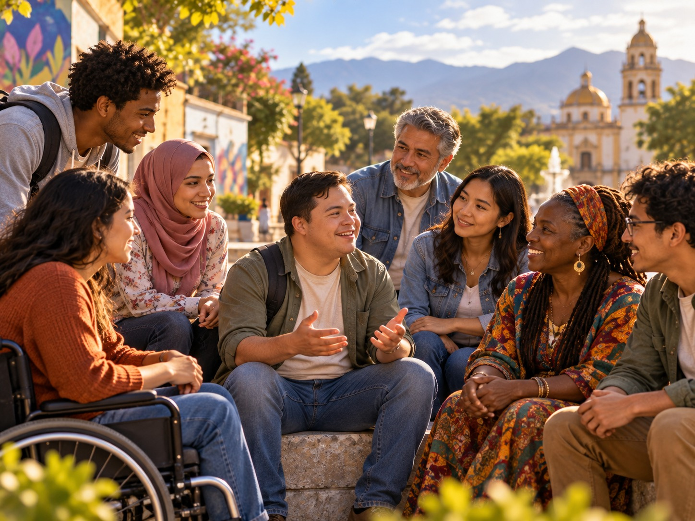
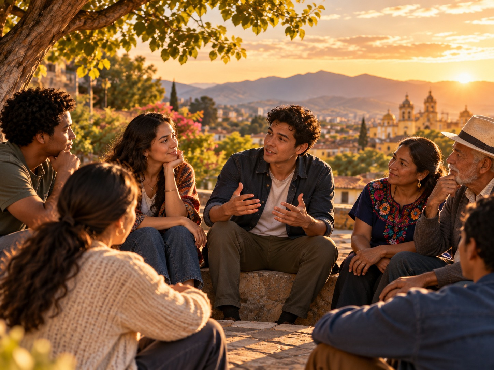
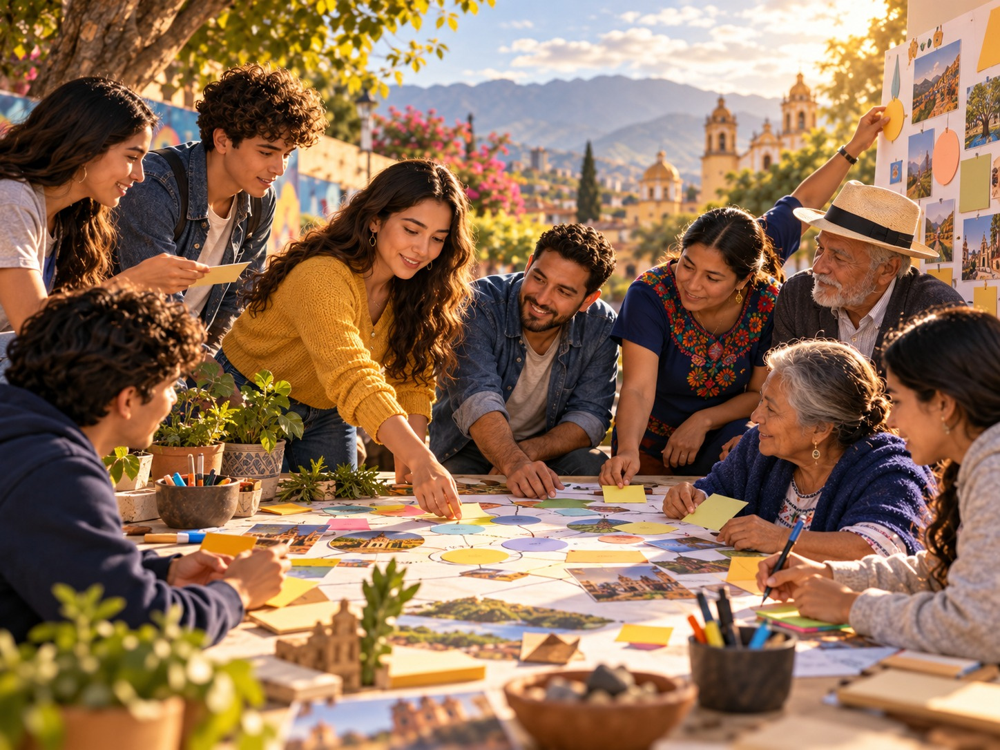
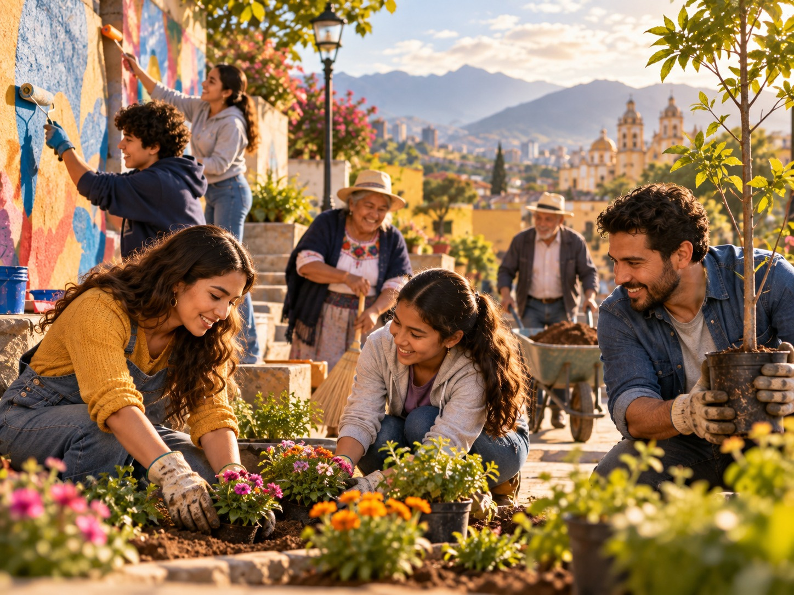
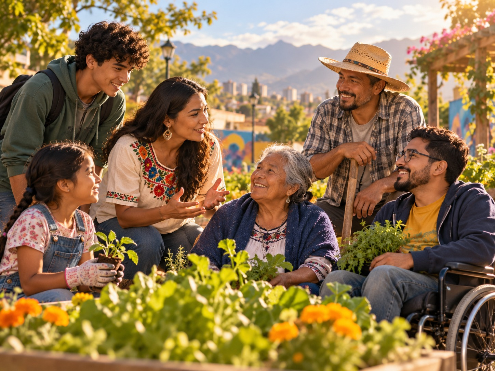

Niño
Los niños tienen derecho a crecer en ambientes seguros, afectivos y con oportunidades para aprender y desarrollar sus talentos.
Al analizar el caso anterior, seguramente notaste que la transformación de la comunidad no comenzó con grandes inversiones ni con soluciones inmediatas.
Comenzó cuando un grupo de personas decidió acercarse a la comunidad, escuchar sus necesidades y trabajar junto con ella.
Pero...
Para responder esta pregunta, te invitamos a explorar los fundamentos del humanismo cristiano, un enfoque que inspira la misión de la Obra Minuto de Dios y que reconoce en cada persona un valor único e irrenunciable.

Es una forma de comprender al ser humano que reconoce que toda persona posee un valor único, irremplazable e inherente, sin importar su origen, condición económica, edad, cultura, religión, capacidades o forma de pensar.
Desde esta perspectiva, el desarrollo de una comunidad no depende únicamente del crecimiento económico o del acceso a recursos. También requiere construir relaciones basadas en el respeto, la solidaridad, la justicia y el reconocimiento de la dignidad de todas las personas.
Por eso, el humanismo cristiano propone que la persona sea siempre el centro de las decisiones, de las acciones y de los procesos de transformación social.
Cuando reconocemos el valor de cada persona, comenzamos a construir comunidades donde todos pueden participar, crecer y aportar al bienestar común.
Los niños tienen derecho a crecer en ambientes seguros, afectivos y con oportunidades para aprender y desarrollar sus talentos.
Los jóvenes aportan creatividad, liderazgo y nuevas ideas. Escuchar sus propuestas fortalece la construcción de comunidades más participativas.
Su experiencia, conocimientos y memoria fortalecen la identidad y el aprendizaje colectivo de la comunidad.

La diversidad enriquece la sociedad. Eliminar barreras y generar oportunidades favorece una participación plena e incluyente.
Las mujeres desempeñan un papel fundamental en el desarrollo familiar, comunitario, social y económico. Promover la equidad fortalece el bienestar colectivo.
Con su trabajo contribuye a la seguridad alimentaria, al cuidado del territorio y al desarrollo sostenible de las comunidades.
La dignidad humana es el valor que posee cada persona simplemente por ser humana.
La dignidad es un valor que acompaña a todas las personas durante toda su vida.
Reconocer la dignidad implica construir relaciones basadas en el respeto, la empatía, la inclusión y el compromiso con el bienestar de los demás.

Los principios del humanismo cristiano orientan las acciones de la Obra Minuto de Dios y de todas las personas comprometidas con la construcción de una sociedad más humana y solidaria.
Explora cada uno de ellos.
Toda persona merece ser reconocida, respetada y acompañada en el desarrollo de su proyecto de vida.
Comprender que el bienestar de cada persona está relacionado con el bienestar de toda la comunidad.
Promover condiciones que permitan a todas las personas acceder a oportunidades para desarrollarse plenamente.
Reconocer que todas las personas tienen algo valioso para aportar.
Buscar aquello que beneficia a toda la comunidad y no únicamente a intereses individuales.
Creer que toda realidad puede transformarse mediante el compromiso y el trabajo conjunto.
Reconocer al otro como una persona valiosa que merece respeto, cuidado y acompañamiento.

Vuelve a pensar en el caso que analizaste al inicio de esta unidad.
Porque las personas fueron escuchadas.
Porque trabajaron de manera colaborativa.
Porque reconocieron el valor de cada integrante de la comunidad.
Porque actuaron pensando en el bienestar común.
Esos mismos principios inspiran la misión de la Obra Minuto de Dios y continúan orientando sus acciones para contribuir al desarrollo integral de las personas y las comunidades.

Toda transformación comienza con una decisión.
No es necesario esperar grandes recursos o cambios extraordinarios para generar impacto.
Las comunidades se fortalecen cuando las personas reconocen la dignidad de quienes las rodean, trabajan de manera solidaria y se comprometen con el bienestar común.
Comparte tu respuesta en el foro de discusión
